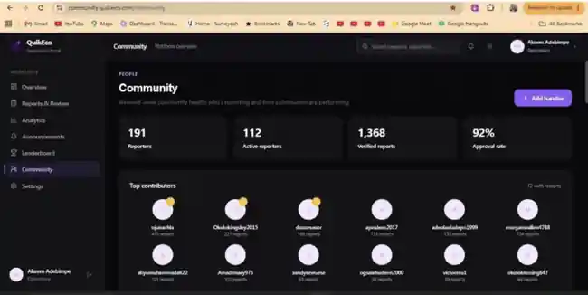
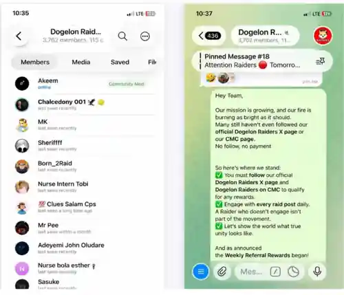

I build communities that move.
I build the systems behind community growth — strategy, partnerships, KOL relationships, campaigns, AMAs, live sessions, onboarding, activation, retention, moderation and feedback loops across Web3, AI and digital ecosystems.
Not just moderation. Community infrastructure.
From audience to ecosystem
I connect acquisition, onboarding, participation, retention and advocacy so community activity supports real growth.
Concrete operating examples.
VoltFX Affiliate Partnership
At TradesbyTCG, I identified partnership opportunities, initiated direct outreach and developed the VoltFX affiliate relationship, then supported activation through community communication and social distribution.
Dogelon KOL Outreach
Built relationships with KOLs, influencers and external community voices; supported outreach and community-driven amplification designed to expand project visibility.
Partnership Communication
Supported community awareness, communication and activation around Dogelon ecosystem collaborations, including initiatives involving Wintermute and BloFin.
Selected community work.

Community operations & contributor infrastructure
Built and operated community systems connecting users, reporters and community handlers.
- 191 reporters and 112 active reporters visible in the operations dashboard.
- 1,368 verified reports with a 92% approval rate.
- Developed community strategy, activation campaigns, contributor structures and feedback loops.
- Coordinated onboarding, participation and weekly performance tracking.

Growth, campaigns, KOLs & live community programming
Supported a fast-moving Web3 ecosystem as Senior Community Manager & Moderator.
- Developed growth strategies, activations, giveaways and engagement initiatives.
- Supported AMAs, community events and interactive programming.
- Built KOL/influencer relationships and helped coordinate amplification campaigns.
- Supported partnership and ecosystem communication.
Onboarding · member questions · guidelines · conflict resolution · product education · feedback · ecosystem initiatives
AI + Web3 community moderation & ecosystem contribution
Supported an AI-powered blockchain analytics ecosystem through moderation, onboarding, education, engagement and community feedback.
- Managed discussions and maintained a positive, organized environment.
- Onboarded users and answered community questions.
- Worked with moderators and leaders on guidelines, conflicts and spam control.
- Promoted ecosystem updates and gathered sentiment to improve community experience.
The stack behind the work.
Strategy & Growth
Community strategy · acquisition · activation · retention · community-led growth · campaigns · contributor programs
People & Programs
KOLs · partnerships · AMAs · live sessions · member support · moderation · escalation · education · feedback loops
Platforms & Tools
B2C Growth & Community Success
Acquisition, onboarding, lifecycle engagement, learner relationships, campaigns and feedback-driven community improvements.
Founder & Community Lead
Trading community growth, social distribution, campaigns, partnerships and community-led acquisition.
Cross-platform operator
Experienced working across distributed communities, fast-moving ecosystems and multiple community touchpoints.
Looking for a community manager who can actually operate?
Open to remote Community Management, Community Operations, Ecosystem Growth and Community Strategy opportunities.